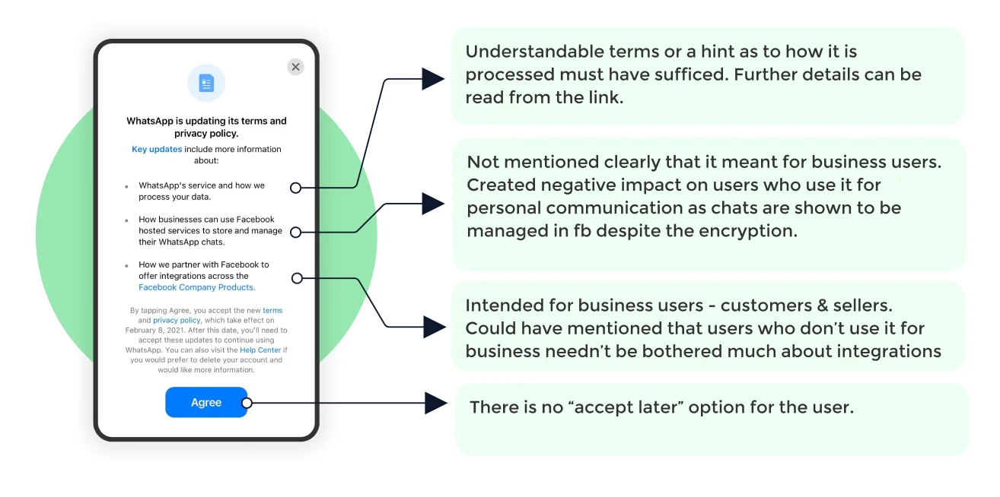
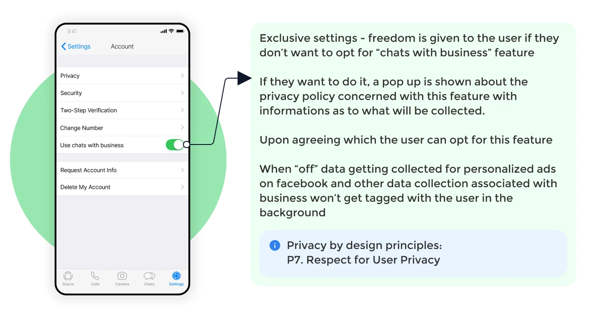

01 — The problem
A policy about business chats read like a threat to everyone.
The policy wasn't the failure. The communication was.
In January 2021, WhatsApp told its users to accept an updated privacy policy or lose access. The update was about business chats. Most users never got that far. They read "WhatsApp shares data with Facebook" and assumed their private messages were next.
Millions left. Signal and Telegram had their best download weeks ever. WhatsApp had changed almost nothing about personal chats, and still triggered one of the biggest user exoduses in messaging history.
That's the problem I picked up.
02 — What I found
One "Accept" button, four different audiences.
I traced WhatsApp's policy history: the 2014 Facebook acquisition and its promise that privacy was coded into WhatsApp's DNA, the 2016 change that shared phone numbers with Facebook and gave users 30 days to opt out, and the 2021 update that offered no choice at all.
Each change was announced the same way to every user, and each time users had less say than before.
Then I looked at who was actually reading these announcements. WhatsApp had four different audiences behind one "Accept" button:
- Personal users, there since the early days, who only chat with friends and family
- Customers who message businesses occasionally
- Sellers who run their business on WhatsApp
- Businesses managing both WhatsApp and Facebook tools
The 2021 policy changed things for group four and barely touched group one. But group one is the majority, and the announcement made no distinction. So the people least affected panicked the most, and left.
This wasn't a privacy problem. It was a segmentation problem wearing a privacy costume.
The screen that broke trust

The original notice was a wall of legal text with two real options: accept, or eventually lose your account. It answered none of the questions users actually had. Can WhatsApp read my messages? Does Facebook see my chats? What changes for me?
03 — The solution
Three moves, all aimed at matching the message to the reader.
1. Say what isn't changing, first.
Reassurance before legal text, in plain words.
The first screen answers the scariest question before anything else: personal conversations stay end-to-end encrypted, and WhatsApp can't read them.
2. Separate business chats from personal chats.
The policy only affected conversations with businesses. So the communication treats them as what they are: a separate, optional feature. Business chats get their own explanation, their own visual label, and their own decision.
3. Make business messaging opt-in, with privacy on by default.
Defaults protect the user. Nobody accepts terms they don't need.
Users choose whether businesses can reach them. Anyone who wants business features turns them on, understands the trade, and moves on.



04 — How it compares
Independent convergence, not influence.
WhatsApp's own fix rolled out between February and May 2021: an in-app banner, a staged explanation flow, and a line making clear personal chats couldn't be read or listened to. A hackathon jury picked my solution as the winner while that rollout was still in progress. I didn't have WhatsApp's constraints, their legal team, or their scale. But on the calls I could make, I made the same ones their team made, and pushed past them where they stopped short.
Rollout announced Feb 18, 2021, effective May 15, 2021 — before the hackathon. This is convergence on the same problem, not influence in either direction.
05 — What I'd do differently
Untested copy, and research I'd now compress.
I never validated which words actually lower panic.
I'd test the copy. My screens assumed plain language works better than legal language, which is a safe bet, but I'd want to run the variants through quick comprehension tests before committing.
Mapping four user segments from policy history took most of my sprint. I'd compress that to hours now.
I'd use AI in the research phase and spend the time saved on testing instead.